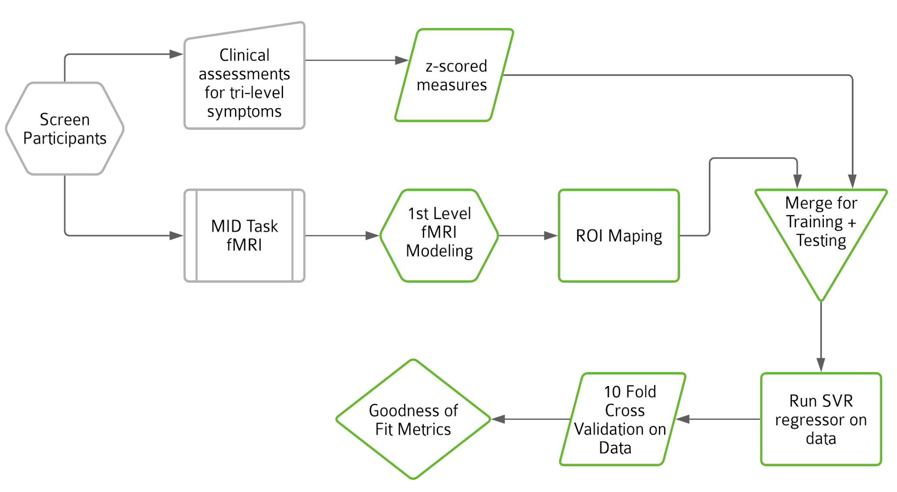
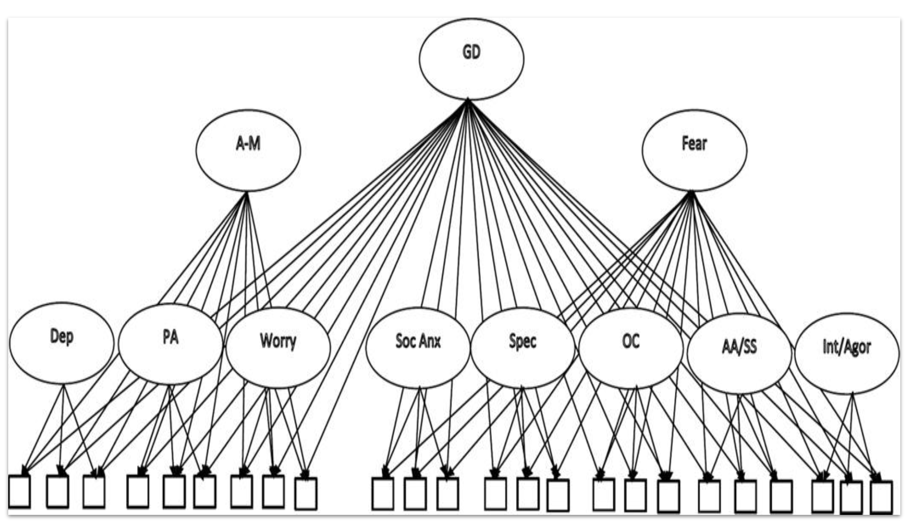
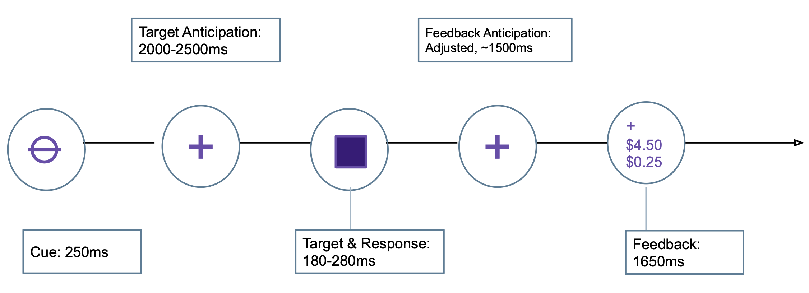
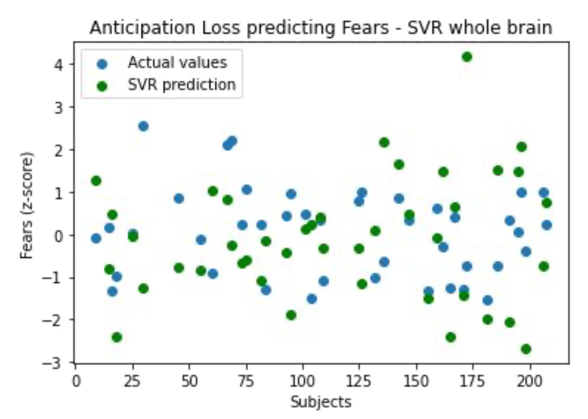
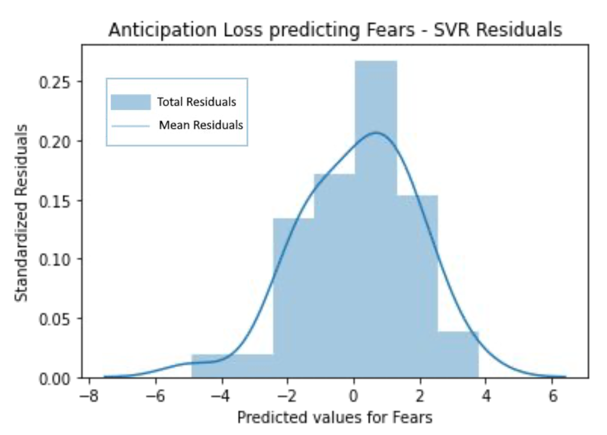
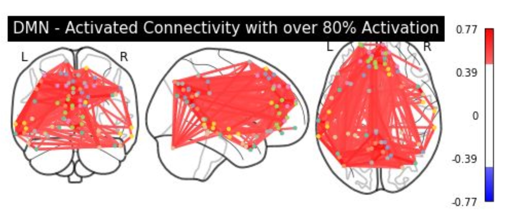

Abstract
Extensive research in psychiatry has highlighted the potential utility of machine learning (ML) automation for disease diagnosis. For many years, studies aimed at uncovering biomarkers for traditional
DSM diagnostic categories of mood disorders, such as Major Depressive Disorder, have presented challenges for many researchers. Machine learning models have been successfully applied in the context of
disease diagnosis and prediction for treatment prognosis, using both structural and functional neuroimaging data. Due to its computational complexity, which does not depend on input space dimensionality,
Support Vector Regression (SVR) provides a supplementary approach for studying whole-brain data, providing a data- driven perspective with sensitivity to relatively small effect sizes and increased reliability
offered by multivariate analytic techniques. However, few studies have examined the relationship between brain activation features from task-based functional Magnetic Resonance Imaging (fMRI) data and symptom
dimensions of anxiety and depression. In this study, we develop a novel application of feature-based type of supervised machine learning, SVR, approach to detect potential biomarkers in fMRI data and dimensional
symptoms of anxiety and depression on 209 subjects enrolled in the study for risk for anxiety and depression. We trained the SVR classifier on fMRI data collected during the well-established Monetary Incentive Delay
(MID) task, which is a widely used task to measure neural activity in response to reward and loss in healthy and clinical populations. The MID datasets were preprocessed into multi-dimensional feature space using a
264 regions of interest (ROI) mask, and the model was fit using ten fold cross validation on all 264 dimensions in order to identify patterns of activation associated with dimensional symptoms of depression and anxiety.
We demonstrate MID task-fMRI data is not an accurate predictor of dimensional clinical symptoms. The results predicted dimensional symptoms with R2 values ranging from -0.269 to -0.658 indicating poor model fit compared
to a horizontal line fit denoting a null effect. The poor model fit of linear models reported in this study suggests that a non-reliable linear relationship between reward-related neural activation and dimensional clinical
symptoms related to the experience of depression and anxiety. Future analysis will explor additional non-linear modeling methods and clustering to further explore the relationship between reward-related brain activation
and dimensional symptoms.
Project Workflow

Left to right: 1. Screen for healthy adults/demographics, 2. Assessment questionnaires for Tri-level symptoms, 3. Standardized z-scores are calculated from questionnaires, 4. Produce MID Task FMRI contrast images, 5.Transform data into 264 dimensions using a 264 ROI atlas, 6. Data is split into 20% training and 80% testing data, 7. Support Vector Regression model is fit on training data, 8. SVR Model is cross validated using 10 fold cross validation, 9. RMSE and R2 scores are calculated for each combination of contrast and tri-level symptom.
Tri-Level Model: General Distress, Fear, Anhedonia as Predictors

The figure adjacent shows the structural composition for the initial (baseline) tri-level model. In our project Fear, General Distress and Anhedonia are used as the predictors (y-values) for the SVR Regressor model. These z-scores were calculated from a set of scales derived from multiple questionnaires (branched underneath sub-categories of symptoms e.g. Social Anxiety, Specific Fears, Obsessive-Compulsive etc.)shown as the unlabelled boxes in the figure.
Monetary Incentive Delay Task

During the Anticipation stage an indication of a possible monetary reward/loss was presented. Subjects were required to respond by pressing a button as quickly as possible and then during the Consumption stage were shown how much they won/lost. fMRI recorded at each stage.
Results: Model Fit and Errors

Poor Model Fit: Results indicate a poor model fit of linear models for our experiment design, this suggests a non-reliable linear relationship
between reward-related neural activation and dimensional clinical symptoms.
Underfitting: Due to the high dimensionality of the data, noise and unrelated brain activation, model is underfitting.

R-squared and root mean squared errors (RMSE): 12 tests were performed with the Cross-folded SVR model. RMSE and R2 values were calculated for each of the 10
folds and mean averaged to produce a final goodness of fit metric.
R2 values range from -4.24 to -0.65 for whole brain tests and slightly improve with fewer dimensions, -1.69 to -0.46 for only one feature deduced from the best p-value correlation across all ROIs.
Conclusions: Poor Model Fit

Classifier Comparisons: The results denotes a poor model fit due to the input variables, indicated by a normal distribution of residuals values.
Thus, we would alternatively explore more targeted brain networks, like the default mode network, prior to assessing model fit of the machine learning classifier.
Goodness of Fit Evaluations: The negative R2 values out of regular R2 bounds (1.0-0.0) imply that a horizontal line (mean) performs better
at predicting the y values than the SVR model's fitted line. Also, high RMSE values show poor prediction of response.
Where do we go from here?..

Model-based approaches: Theory derived known networks such as Default Mode Network, Cingulooperculur network, Frontoparietal or Salience networks
could be analyzed to further reduce the dimensionality of the data and discard noise or unwanted activation affecting the results.
Non-linear Methods: Future analysis could alternatively explore additional non-linear modeling methods, like clustering, to further explore the relationship between
reward-related brain activation and dimensional symptoms.